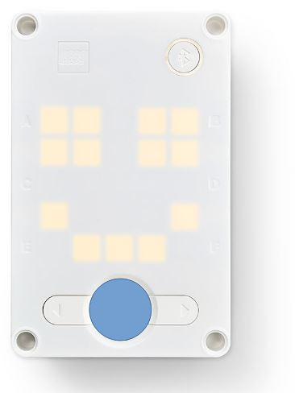
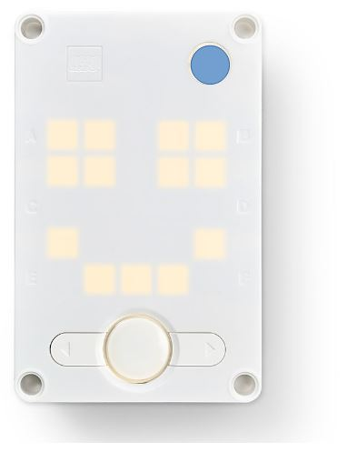
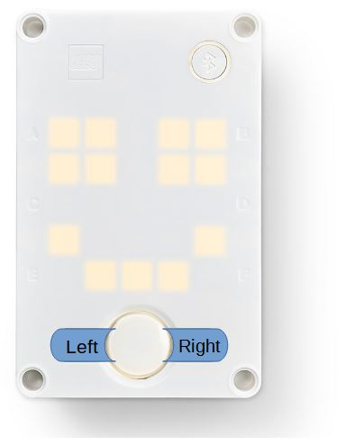
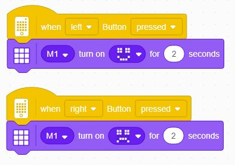
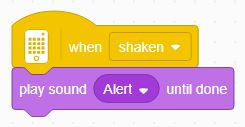
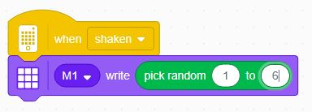

Events
Now that we know how to create basic code sequences with repeated patterns, let's learn about a way to trigger different sequences, called Events.
Events are a way to trap something that happens and then trigger some program execution.
We already used one type of event - when program starts.
But there are many other ones, for instance when the user clicks a button.
Spike Hub Buttons
You've already used the Spike Hub Power/Home button:

And maybe the Bluetooth button:

But, there are two direction buttons as well, and we can use them to control events.

When Button Pressed Event
So let's make a program with the following logic:
- When the Left button is pressed, show a smiley face
- When the Right button is pressed, show a sad face
Find the correct Event block under the Events blocks tab, and add the appropriate Light block, e.g:

Challenge: Other Events
Look at some of the other events.
Some events have to do with external sensors (color, limit switch/push-button, ultrasonic) - we will deal with those later.
Others have to do with the Hub itself and its internal sensors, so let's start with exploring some of those now:
- When Shaken (easy)
- Make a program that sounds an alert whenever it's shaken
- Make a program that sounds an alert whenever it's shaken
- When Shaken (medium)
- Make a Random Dice that shows a number between 1 and 6 when the Hub is shaken (use Operators tab to find a block that generates random numbers)
- Make a Random Dice that shows a number between 1 and 6 when the Hub is shaken (use Operators tab to find a block that generates random numbers)
- When [Hub Face] is up (hard)
- Make a program that shows an arrow pointing "up" no matter which way you're holding the Hub.
- Make a program that shows an arrow pointing "up" no matter which way you're holding the Hub.
And think of ways to use these:
- When [loudness/timer]
- When Tilted [direction]
Some solutions to the above challenges can be found below...
Try to program on your own first, and only look when you give up!
-
-
-
-
-
-
-
-
-
-
When Shaken (easy):

-
-
-
-
-
When Shaken (medium):

-
-
-
-
-
When [Hub Face] is up (hard)